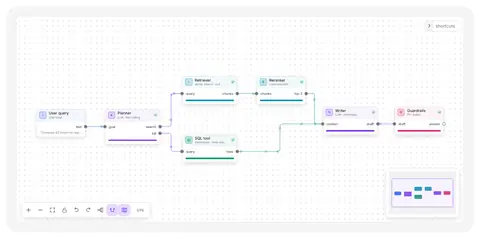
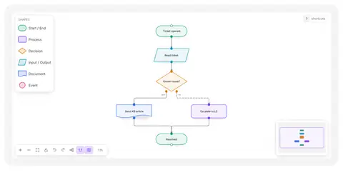
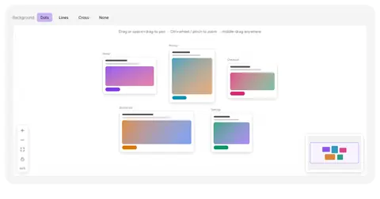
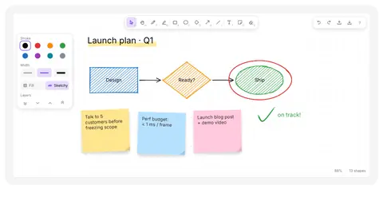
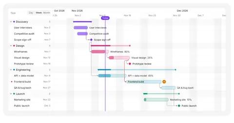
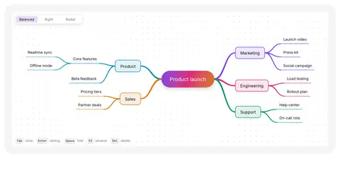
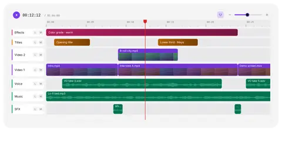
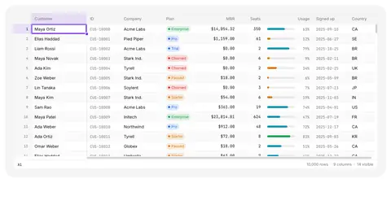
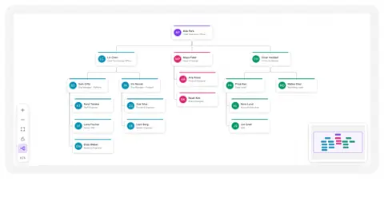
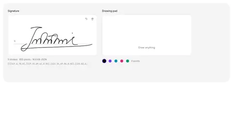

Node editors and infinite canvases for egui
The heavy pieces of creative and developer tools: a React-Flow-style node editor, shader graphs, flowcharts, an infinite canvas and whiteboard, kanban and gantt boards, mind maps, a timeline editor, a data grid, org charts and a signature pad.
All Canvas & Editors components

Node Editor
Canvas & EditorsA workflow-automation graph: drag nodes, connect handles with a live bezier preview, box-select, minimap, controls, undo/redo, copy/paste and auto-layout.

Shader Graph
Canvas & EditorsA material node graph with typed, color-coded ports: only compatible types connect, valid handles glow while you drag, and nodes render live previews.

AI Agent Pipeline
Canvas & EditorsAn AI agent graph whose stages light up as a run flows through it: running spinners, progress bars, and particles travelling along the edges.

Flowchart
Canvas & EditorsDrag flowchart shapes (process, decision, terminator, data, document, event) from the palette onto the canvas and wire them top-to-bottom with arrowed smooth-step edges.

Infinite Canvas
Canvas & EditorsA pannable, zoomable surface: drag / middle-mouse / space+drag to pan, ctrl+wheel or pinch to zoom smoothly around the cursor, dot / line / cross backgrounds, minimap and fit-to-content.

Whiteboard
Canvas & EditorsAn infinite whiteboard: pen with pressure-like strokes, highlighter, shapes, arrows that stick to shapes, text, sticky notes, eraser, resize / rotate handles, a hand-drawn sketchy style, layers, undo and JSON export.

Kanban Board
Canvas & EditorsDrag cards within and between columns: other cards spring aside to open a gap and dropped cards glide into place. Inline add, WIP limits, labels, avatars, due dates and collapsible columns.

Gantt Chart
Canvas & EditorsA project timeline: grouped rows, bars with progress fill, milestones, dependency arrows (red when violated), a today line and day / week / month zoom. Drag bars to move, edges to resize, the notch to set progress.

Mind Map
Canvas & EditorsAuto-laid-out mind map with tapered, color-coded branches. Tab adds a child, Enter a sibling, Space folds a branch with an animated collapse; switch between balanced, right and radial layouts.

Timeline Editor
Canvas & EditorsVideo-editor tracks with thumbnail strips and waveforms: drag clips across tracks, trim either edge with magnetic snapping, scrub the playhead on the zoomable ruler, press space to play.

Data Grid
Canvas & EditorsA virtualized spreadsheet with 10,000 rows: frozen header, row numbers and first column, drag-select ranges, type to edit, Enter / Tab navigation, resize columns, TSV copy / paste and a live sum.

Org Chart
Canvas & EditorsA tidy top-down tree on a pan / zoom canvas: person cards, collapsible teams with report counts, compact stacking for leaf teams, and the selected person's chain of command highlighted.

Signature Pad
Canvas & EditorsSmooth ink capture with speed-based thinning and tapered ends: a signature field with a baseline and a free drawing pad, with undo, clear and point export.